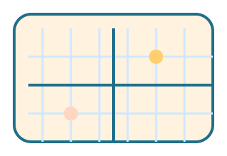

מה לומדים?
- היקף: סכום כל הצלעות.
- שטח מלבן: אורך כפול רוחב.
- שטח משולש: בסיס כפול גובה חלקי 2.
דוגמאות קצרות
הכינו מלבן בגודל 4 על 3 ריבועים וחשבו שטח והיקף.
משימה ידנית
שרטטו גן משחקים ורשמו כמה מטרי גדר צריך סביבו.
מבינים את ההבדל בין מסגרת לשטח בפנים.

הכינו מלבן בגודל 4 על 3 ריבועים וחשבו שטח והיקף.
שרטטו גן משחקים ורשמו כמה מטרי גדר צריך סביבו.